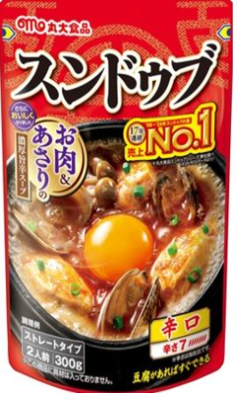
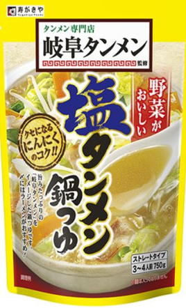
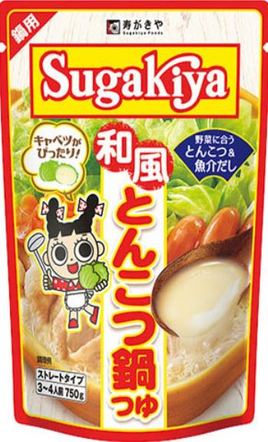
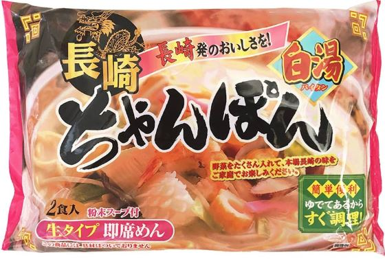

Yummy
-鍋の素 and 鍋の素×食材 評価-
- ■評価基準（※過去の自分にオススメできるか それが超大事）
- 5.0 神
- 4.5 過去の自分に超オススメできる。また絶対に食べたい。
- 4.0 過去の自分にオススメできる。また食べたい。
- ----------------------------------4.0の壁 ↑普通に美味いという高い壁を超えて、また、食べたいと思うか。
- 3.5 普通にうまい。
- 3.0 普通。
- 2.0 おいしくない。
- 1.0 最悪。
- ■美味しく鍋を食べる ㊙3箇条
- ①ねぎ・白菜（きゃべつ）・豆腐 が超基本。超本質。超最適解。まずい肉を入ると味が変になる。まずは入れずに一度食べてみよう。
- ②食材は細かいほうが美味い。1回、細かめに切ってみよう。
- ③食べるときはスマホやTVを見ず、食に集中して、リラックスして食べてみよう。1人で食べるのも、とてもオススメ。
- 赤から（イチビキ）

- ごま豆乳鍋つゆ（ミツカン）

- スンドゥブチゲ（S＆B）

- キムチ鍋の素（エバラ）

- スンドゥブチゲの素（丸大食品）

- lovers辛旨じゃん（ミツカン）

- 鳥だしうましお7個入（味の素）

- 豚骨醤油（ミツカン）

- 豚みそちゃんこ鍋つゆ（イチビキ）

- 岐阜タンメン監修塩タンメン鍋つゆ
（寿がきや）
- 地鶏だし塩鍋つゆ（ヤマキ）

- プチッと鍋 担々ごま鍋 40ｇ×4個
（エバラ）
- 焼あごだし鍋つゆ（ミツカン）

- SUGAKIYA和風とんこつ鍋つゆ（寿がきや）

- 参鶏湯の素（S＆B）

- キムチ鍋つゆ（イチビキ）

- 寄せ鍋つゆ(イチビキ）

- ごま豆乳鍋つゆ(ミツカン）
（小分け4パック入り）
- 赤から(ミツカン）
（小分け4パック入り）
- ちゃんぽん（五木食品）

- 長崎ちゃんぽん（狩野ジャパン）

- ★★★★⋆（4.5）
- ★★★★（4.0）
- ★★★⋆（3.5）
- ★★★⋆（3.5）
- ★★★⋆（3.5）
- ★★★⋆（3.5）
※最強な油そばの作り方
ならば4.0
- ★（1.0）
- ★★★⋆（3.5）
- ★★★⋆（3.5）
- ★★★⋆（3.5）
※審議中。4.0もありえる
- ★★★⋆（3.5）
- ★★（2.0）
- ★★★⋆（3.5）
- ★★★⋆（3.5）
※ラーメンは審査中4/0あるかも
- ★★★⋆（3.5）
※最初3.0で最後には3.5になる不思議。
- ★★★（3.0）
- ★★★⋆（3.5）※4.0にちかい。精査中
- ★★★★（4.0）
- ★★★★⋆（4.5）
- ー
※シーフード掛け合わせて俺様の作り方で4.0
- ー
※シーフード掛け合わせて3.5
-
ねぎ×きゃべつ×豆腐
→★★★★⋆（4.5）
×焼きそば 投入
→★★★★（4.0）
×うどん 投入
→★★★★（4.0）※4.5かも。審議。
-
ねぎ×きゃべつ×豆腐
→★★★★（4.0）
-
ねぎ×きゃべつ×豆腐
→★★★⋆（3.5）
×生卵 投入
→★★★⋆（3.5）
-
ねぎ×豆腐
→★★★⋆（3.5）
焼きそば 投入
→★★★⋆（3.5）
-
豆腐
→★★★⋆（3.5）
焼きそば 投入
→★★★⋆（3.5）
-
ネギ×豆腐
→★★★⋆（3.5）
焼きそば 投入
→★★★★（4.0※最強の作り方なら
-
ネギ×豆腐
→★（1.0）
雑炊（※米投入）
→★★（2.0）※最初の味は3.5
-
ネギ×キャベツ×豆腐
→★★★⋆（3.5）
焼きそば 投入
→★★★⋆（3.5）
-
ネギ×えのき
→★★★⋆（3.5）
雑炊（米投入）
→★★★⋆（3.5）※次回食べたら4.0もありえる。審議中
-
ネギ×豆腐×白菜
→★★★⋆（3.5）※次回食べたら4.0かも。審議。
うどん 投入
→★★★⋆（3.5）
-
豆腐×白菜
→★★★⋆（3.5）
焼きそば 投入
→★★★⋆（3.5）
-
ねぎ×うどん
→★★（2.0）
-
ネギ×豆腐×キャベツ×しめじ
→★★★⋆（3.5）
うどん 投入
→★★★（3.0）
-
ネギ×豆腐×キャベツ
→★★★⋆（3.5）
やきそば 投入
→★★★⋆（3.5）※審査中4.0かも
-
ネギ×豆腐
→★★★⋆（3.5）
ご飯投入してクッパ
→★★★⋆（3.5）
-
豆腐×しめじ
→★★★（3.0）
ご飯投入してクッパ
→★★★（3.0）
-
豆腐×ねぎ×しめじ
→★★★⋆（3.5）※4.0かも審査中
雑炊
→★★★⋆（3.5）※4.0かも審査中
-
豆腐×ねぎ
→★★★★（4.0）
豆腐のみ
→★★★★（4.0）※豆腐×ねぎのほうが美味い4.0
雑炊（豆腐×ねぎ）
→★★★★（4.0）
豆腐×ねぎ×やきそば
→★★★⋆（3.5）
-
豆腐×ねぎ（5辛）
→★★★★⋆（4.5）
ご飯投入してクッパ（5辛）
→★★★★⋆（4.5）
やきそば×豆腐×ねぎ（5辛）
→★★★★（4.0）
うどん×ねぎ×しめじ（5辛）
→★★★★（4.0）
-
シーフード×油_小鍋（太海商事_徳用シーフードミックス）※フライパンではなく小鍋に油引いてシーフード入れる。熟す蒸す感じ。
→★★★★（4.0）
-
シーフード×油_小鍋（太海商事_徳用シーフードミックス）
→★★★⋆（3.5）
- マジでくそ美味い！！！
過去の自分に超オススメできる。辛いジャンルなら今のところ一番。
超シンプルにねぎ・きゃべつ・豆腐が最高。きゃべつの代わりに白菜でもok。
30円位の焼きそばを入れると、なぜかラーメンになりクソ美味い
- うまい。
過去の自分にお勧めできる。
ホッとする味。絶望した時にオススメ。安心する味。また買ってみようと思える味。
- 普通にうまい。
生卵いれないほうがうまいと思う。
- 普通にうまい。素と水は1:2の割合。素は300ml入っている。水を600ml入れるから、900mlの多い量を食べられる。
- 普通にうまい。No1とかいてあったけど、普通にうまいくらい
- 油そばでくうとうまい！！！ 最強の作り方使うと4.0。まじうまいな。最強の食い方が液体50ml水100mlにネギきって入れて、かつ焼きそばいれて、汁なくなるまで、まつこと。鍋としてはふつうにうまい。
- 史上最悪。こんなに、においがやばいものはない。飯食う気なくなる。その匂いが鍋食べる時も蘇る。おわり。
- 普通にうまい。
- 普通にうまい。雑炊は次食べたら4.0いくかもしれない。精査が必要。あと豚バラいれて食べてないから、もう1回かうかもな。
- これはあたりかも。また頼む。精査が必要。3.5やったけど、次食べたら、4.0かもしれない。確かに野菜がうまくかんじた！！
- 普通にうまい。
- おいしくねぇ。匂いもよくない。キューブ自体がまずいかもな。
- 普通にうまい。うどんいれるとあじおかしくなる。透明スープがにごる。パッケージ裏面にお茶づけおすすめて書いてるから、うどんはおよびじゃなさそうだな。
- 普通にうまいな。やきそばいれたラーメンは4.0かもしれない。審査中
- スゲー不思議な商品。最初は何口食べでも3.0だが、鍋の素にねぎ・豆腐入れて、全部たべると、あれ？え？？3.5やな。あれ？？また買ってもいいかもしれないと思う不思議な商品。普通鍋の素て嫌な感じがする時があるんだけど、それが全くない。すごい。これはまじですごいこと。
こういう商品てまじでないぞ。なんかお前の味覚は大丈夫か？いつも濃い味食ってるけど、俺の味、うまいと思えるかという？挑戦を投げかけられているような気もする。おもしれー食品。
- 普通やな。
- うめぇな。4.0ありえるうまさ。4.0に近いの間違いない。4.0（過去の自分にオススメできる。また食べたい）かは精査中。多分これまたかうなぁ。雑炊もうまかった。3.5（普通にうまい）と4.0は
凄いさがある。普通にうまいとまた食べたいの差は半端ないけど、これはその壁を超えてるかもなぁ。一旦3.5。
- 鍋で豆腐とねぎいれると、めちゃうまい！！。4.0（鍋は豆腐のみで4.0あるけど、ねぎもいれたほうがうまい4.0になる。）豆腐とねぎにたまごとライスいれた雑炊も4.0。うめぇ！！！絶対雑炊もまた作るわ。やきそばいれたラーメンは3.5。普通にうまかった。やきそばの麺があわなかった説もある。
- マジでくそ美味いな！！！天才だわ
過去の自分に超オススメできる。小分けなのもええな。
超シンプルにねぎ・豆腐が最高。うめぇわ！！バケモン
やきそばもうどんもうまいね。※全部5辛
- これが最強の作り方。フライパン洗うの面倒いから使わんくて良い。小さい鍋つかえ。①小さい鍋に油いれる（そこそこの量。少なすぎるとだめ。ちょっと多めくらい）②次にシーフードぶち込む③そんでかならず蓋す。熟す蒸す感じ。④水300入れてｍ沸騰させて⑤粉入れて沸騰させて⑥麺入れて2分でくう。
ちゃんぽん×俺様の食材×俺様の作りか=4.0だわ。油の量と蒸すのが大事やな。油めちゃ少なくしたとき、最強の作り方よりはだめやったね。まじうめぇ！！戦争なくなる味するぞ！！！。スープがうまいな。五木食品に注目するわ。
- 普通にうまい。
- 25/5/9、25/5/11、25/5/12
に1袋分を1回目として食べた。25/7/7、25/7/8に1袋分を2回目としてたべた（2回目）
※全商品 25/5/7からカウント
- 25/5/7、25/5/8
に1袋分をだべた。（1回目）
- 25/5/14
に1袋分を食べた。（1回目）
- 25/5/16、25/5/17、25/5/18、25/5/21、25/5/22
に1ボトル分（素300ml分）食べた（1回目）
- 25/6/5、25/6/6
に1袋分を食べた。（1回目）
- 25/6/12、25/6/16、25/6/17、25/6/18、25/6/20
に1袋分を食べた。（1回目）
- 25/6/20にキューブ2個つかった。（1回目_これ以上食べたくないからおわり）
- 25/6/23、25/6/24に1回目たべた。25/7/4に2回目としてたべた。（2回目）
- 25/7/1、25/7/3に1袋分食べた（1回目）
- 25/7/8、25/7/9に1袋分食べた（1回目）
- 25/7/9に1袋分食べた（1回目）
- 25/7/16に1個使った（1回目_これ以上は食べたくないからおわり）
- 25/7/21に1袋使った（1回目）
- 25/8/3、8/5に1袋使った（1回目）
- 25/8/9に1袋全部使った（1回目）
- 25/8/12に400ml、25/8/13に320ml使って1袋分使いおわった（1回目）
- 25/8/15、25/8/16に食べて、1袋分使いおわった。（素：1回目）
- 25/8/19に1パック食べた（4小分けパックのうち。）25/8/28に1パックつかった（残り2パック。）25/8/30、8/31で1パック分つかう。25/9/1ラスト1パックつかう（1回目:4パックを全部使いきる）
- 25/9/3、25/9/4に2袋分を使って食べた。25/9/4に1袋分つかった。25/9/5、25/9/6に1袋つかった。（1回目）
- （※3回くらい自分でつくって編み出した）ここから、25/9/5から1回目とするぜ。（1回目）
- 25/9/10に1袋分食べた。（1回目）